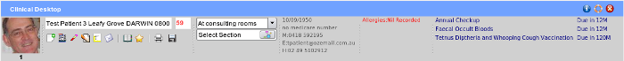

Toolbar Recalls

Not all recalls will end up being posted or emailed out to the patient. Many will be handled opportunistically when
the patient visits.
To act as a constant reminder, a small list sits on the extreme right of the main clinical toolbar.
Recalls or reminders are listed in order of when they are due from earlier to later, top to bottom.